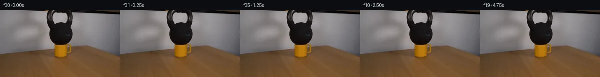

![首帧]()

Round 00
2026-11-05T19:45:53.768479+00:00像素候选变化代码 +101/−0inspection 更新
pixels f5bde1d9b7d24a89 · code 0510a49d1a9b8403
查看本轮 generate.py 真实 diff
--- previous/generate.py
+++ current/generate.py
@@ -0,0 +1,101 @@
+"""Generate the photographed static equilibrium using only local source pixels."""
+from pathlib import Path
+import hashlib
+import json
+import shutil
+
+import numpy as np
+from PIL import Image, ImageDraw
+
+import artifact_io
+
+
+ROOT = Path(__file__).resolve().parent
+N_FRAMES = 20
+FPS = 4
+
+
+def make_transition_check(frames):
+ """Output-only montage of representative transitions and contact geometry."""
+ sheet = Image.new("RGB", (1024, 452), (25, 28, 35))
+ draw = ImageDraw.Draw(sheet)
+ for col, number in enumerate((0, 1, 10, 19)):
+ x = col * 256
+ draw.text((x + 8, 8), f"Frame {number:02d} | {number / FPS:.2f} s", fill="white")
+ sheet.paste(Image.fromarray(frames[number]), (x, 28))
+ draw.text((x + 8, 182), "Cup / weight contact (3x)", fill="white")
+ crop = Image.fromarray(frames[number]).crop((99, 57, 160, 112))
+ crop = crop.resize((183, 165), Image.Resampling.NEAREST)
+ sheet.paste(crop, (x + 36, 204))
+
+ deltas = np.abs(np.diff(frames.astype(np.int16), axis=0))
+ maximum = int(deltas.max())
+ changes = np.count_nonzero(np.any(deltas, axis=-1), axis=(1, 2))
+ draw.text((8, 383), f"All 19 adjacent transitions: max RGB difference = {maximum}; changed pixels = 0", fill="white")
+ draw.text((8, 405), "Static equilibrium: no motion, fractures, exposure changes, or camera changes.", fill="white")
+ draw.text((8, 427), "Contact crops above are diagnostic magnifications; output frames remain 256 x 144.", fill=(190, 199, 214))
+ sheet.save(ROOT / "transition_check.png")
+ return maximum, changes.tolist()
+
+
+def verify(frames):
+ with np.load(ROOT / "pixels.npz", allow_pickle=False) as archive:
+ assert archive.files == ["pixels"]
+ tensor = archive["pixels"]
+ assert tensor.shape == (144, 256, N_FRAMES), tensor.shape
+ assert tensor.dtype == np.uint32, tensor.dtype
+ assert np.all(tensor <= 0xFFFFFF)
+ assert len(list((ROOT / "frames").glob("*.png"))) == N_FRAMES
+ for t in range(N_FRAMES):
+ with Image.open(ROOT / "frames" / f"{t:02d}.png") as im:
+ assert im.mode == "RGB" and im.size == (256, 144)
+ png = np.asarray(im)
+ packed = (
+ (png[:, :, 0].astype(np.uint32) << 16)
+ | (png[:, :, 1].astype(np.uint32) << 8)
+ | png[:, :, 2].astype(np.uint32)
+ )
+ assert np.array_equal(packed, tensor[:, :, t]), f"PNG/tensor mismatch: {t}"
+ assert np.array_equal(png, frames[t])
+ assert (ROOT / "frames" / "00.png").read_bytes() == (ROOT / "first_frame.png").read_bytes()
+ assert np.array_equal(frames[0], np.asarray(Image.open(ROOT / "first_frame.png")))
+ assert np.all(frames == frames[0])
+
+
+def main():
+ assert (ROOT / "OBSERVATION.md").is_file(), "Pre-coding observation is required."
+ with Image.open(ROOT / "first_frame.png") as image:
+ assert image.mode == "RGB" and image.size == (256, 144)
+ source = np.array(image, dtype=np.uint8)
+
+ # The initial state is already at rest. There is no specified subsequent
+ # forcing event, so the physical continuation has identical visible pixels.
+ frames = np.repeat(source[None, :, :, :], N_FRAMES, axis=0)
+ artifact_io.save(frames, ROOT)
+ # Preserve not only frame 00's RGB values but also the source PNG bytes.
+ shutil.copyfile(ROOT / "first_frame.png", ROOT / "frames" / "00.png")
+ maximum, changed_counts = make_transition_check(frames)
+ verify(frames)
+ report = {
+ "frame_count": N_FRAMES,
+ "frame_size": [256, 144],
+ "frame_mode": "RGB",
+ "fps": FPS,
+ "duration_seconds": N_FRAMES / FPS,
+ "tensor_key": "pixels",
+ "tensor_shape": [144, 256, N_FRAMES],
+ "tensor_dtype": "uint32",
… diff truncated; 14 more lines …